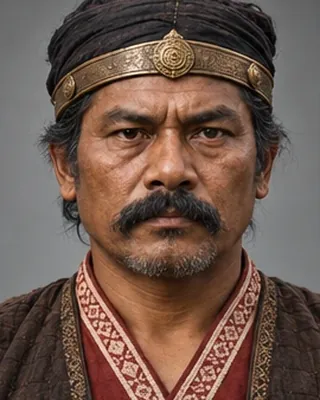

1523
Dhirnarayan
to 1523–24 · Last Chutia king

Built a fort at Dikhowmukh in 1513, was routed attacking the Ahom fort at Dibru in 1523, and was killed, ending the kingdom in 1523–24.
Known from an inscription dated 1522.
Record confidence: high.